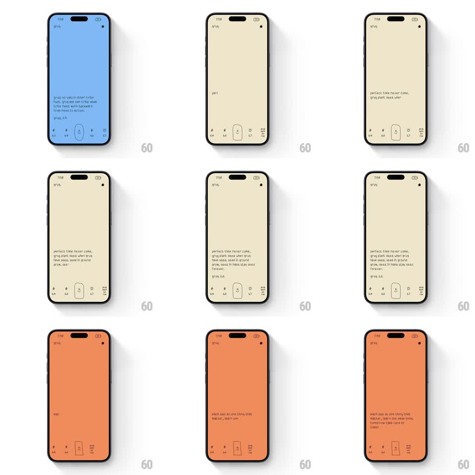

Media
Frame-by-frame

Rebuild this animation 1:1: grug's intro - handwritten caveman wisdom types itself out letter by letter while the whole background shifts color between steps (blue, cream, orange), with a row of tiny version glyphs pinned at the bottom.

Rebuild this animation 1:1: grug's intro - handwritten caveman wisdom types itself out letter by letter while the whole background shifts color between steps (blue, cream, orange), with a row of tiny version glyphs pinned at the bottom.
## Integration
Integration: stack-agnostic spec - springs given as stiffness/damping, timed motions as duration + curve; map every value to your framework and animation library of choice.
## Scene
Full-screen flat color field. Center-left text block in a rough hand-drawn style, small "grug" mark top-left, and a bottom strip of tiny glyph buttons labeled with version numbers (6.3 - 6.7). Each step pairs a background color with a short caveman-speak aphorism ("perfect time never come, grug plant seed when have seed. seed in ground grow, see.").
## Motion spec
Pattern: typewriter text reveal with crossfading background colors per step.
- Text types in character by character (~40-60 chars/sec, slight random timing jitter so it feels hand-typed), no cursor glow - a simple blinking block cursor.
- Line wraps happen live as typing reaches the margin.
- When the aphorism completes, a pause (~800ms), then the background crossfades to the next color (500ms, ease-in-out) while the text block clears and the next one starts typing.
- The active bottom glyph gets a rough circle highlight that skitters into place (rotate +/- 5deg, 200ms).
## Calibration
- Typing jitter is the charm: vary per-character delay by +/- 30%.
- Color changes are full-bleed and slow; text motion is fast and crisp.
## Reduced motion
Full text fades in per step (250ms); background color crossfade stays.
## Don't miss
- The typeface is deliberately crude handwriting - do not substitute a clean sans.
- Bottom glyph row never moves; only the highlight circle hops between versions.